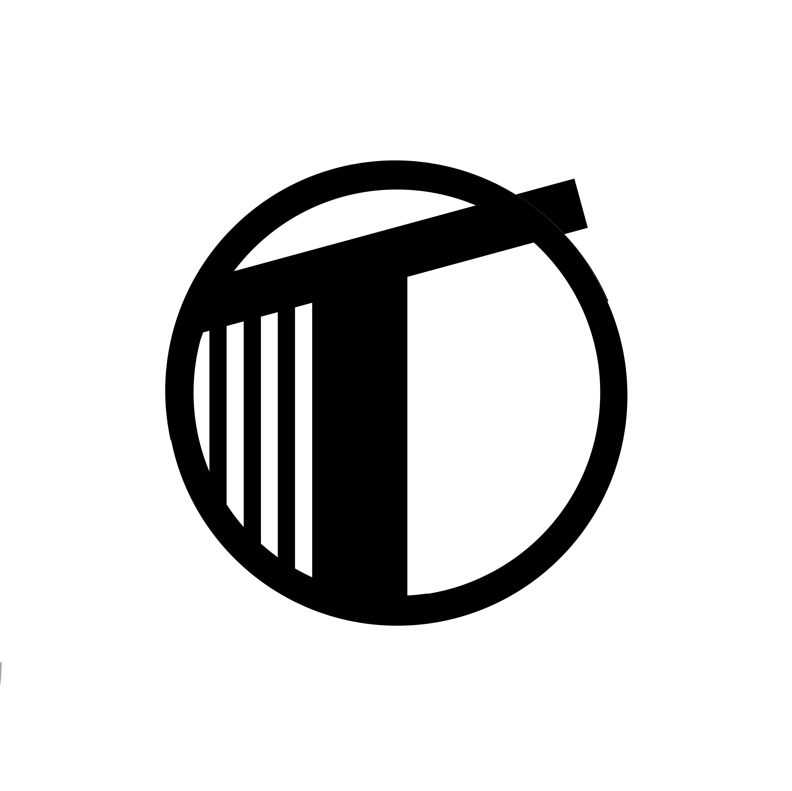

About
Telescope Records is an independent record label from Assam, India. Founded by brothers and chief executives Akash Jyoti and Ayon Jyoti Nath in 2018, is a home to a varied roster across North - Eastern India. It aims to empower artists to thrive independently, with honesty, creative thinking and passion.
